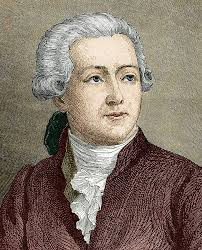

ANTOINE LAVOISIER

Introduction
Antoine-Laurent de Lavoisier (26 August 1743 – 8 May 1794) was a French nobleman and chemist central to the 18th-century Chemical Revolution and a large influence on both the histories of chemistry and biology.He is widely considered to be the "Father of Modern Chemistry."
Lavoisier was an administrator of the Ferme Générale and a powerful member of a number of other aristocratic councils. All of these political and economic activities enabled him to fund his scientific research. At the height of the French Revolution, he was accused by Jean-Paul Marat of selling adulterated tobacco and of other crimes, and was eventually guillotined a year after Marat's death.
About Lavoisier
Antoine-Laurent Lavoisier was born to a wealthy family in Paris on 26 August 1743. The son of an attorney at the Parliament of Paris, he inherited a large fortune at the age of five with the passing of his mother.Lavoisier began his schooling at the Collège des Quatre-Nations (known as the Collège Mazarin) in Paris in 1754 at the age of 11. In his last two years (1760–1761) at the college his scientific interests were aroused, and he studied chemistry, botany, astronomy, and mathematics. In the philosophy class he came under the tutelage of Abbé Nicolas Louis de Lacaille, a distinguished mathematician and observational astronomer who imbued the young Lavoisier with an interest in meteorological observation, an enthusiasm which never left him. Lavoisier entered the school of law, where he received a bachelor's degree in 1763 and a licentiate in 1764. Lavoisier received a law degree and was admitted to the bar, but never practiced as a lawyer. However, he continued his scientific education in his spare time.
Lavoiser’s work
During late 1772 Lavoisier turned his attention to the phenomenon of combustion, the topic on which he was to make his most significant contribution to science. He reported the results of his first experiments on combustion in a note to the Academy on 20 October, in which he reported that when phosphorus burned, it combined with a large quantity of air to produce acid spirit of phosphorus, and that the phosphorus increased in weight on burning. In a second sealed note deposited with the Academy a few weeks later (1 November) Lavoisier extended his observations and conclusions to the burning of sulfur and went on to add that "what is observed in the combustion of sulfur and phosphorus may well take place in the case of all substances that gain in weight by combustion and calcination: and I am persuaded that the increase in weight of metallic calces is due to the same cause."
Lavoisier's researches included some of the first truly quantitative chemical experiments. He carefully weighed the reactants and products of a chemical reaction in a sealed glass vessel, which was a crucial step in the advancement of chemistry.In 1774, he showed that, although matter can change its state in a chemical reaction, the total mass of matter is the same at the end as at the beginning of every chemical change. Thus, for instance, if a piece of wood is burned to ashes, the total mass remains unchanged. Lavoisier's experiments supported the law of conservation of mass. In France it is taught as Lavoisier's Law and is paraphrased from a statement in his "Traité Élémentaire de Chimie" to "Rien ne se perd, rien ne se crée, tout se transforme." ("Nothing is lost, nothing is created, everything is transformed."). Mikhail Lomonosov (1711–1765) had previously expressed similar ideas in 1748 and proved them in experiments; others whose ideas pre-date the work of Lavoisier include Jean Rey (1583–1645), Joseph Black (1728–1799), and Henry Cavendish(1731–1810).
Lavoisier, together with L. B. Guyton de Morveau, Claude-Louis Berthollet, and Antoine François de Fourcroy, submitted a new program for the reforms of chemical nomenclature to the Academy in 1787, for there was virtually no rational system of chemical nomenclature at this time. The new system was tied inextricably to Lavoisier's new oxygen theory of chemistry. The Classical elements of earth, air, fire, and water were discarded, and instead some 55 substances which could not be decomposed into simpler substances by any known chemical means were provisionally listed as elements. The elements included light; caloric (matter of heat); the principles of oxygen, hydrogen, and azote (nitrogen); carbon; sulfur; phosphorus; the yet unknown "radicals" of muriatic acid (hydrochloric acid), boracic acid, and "fluoric" acid; 17 metals; 5 earths (mainly oxides of yet unknown metals such as magnesia, barite, and strontia); three alkalies (potash, soda, and ammonia); and the "radicals" of 19 organic acids. The acids, regarded in the new system as compounds of various elements with oxygen, were given names which indicated the element involved together with the degree of oxygenation of that element, for example sulfuric and sulfurous acids, phosphoric and phosphorus acids, nitric and nitrous acids, the "ic" termination indicating acids with a higher proportion of oxygen than those with the "ous" ending. Similarly, salts of the "ic" acids were given the terminal letters "ate," as in copper sulfate, whereas the salts of the"ous" acids terminated with the suffix "ite," as in copper sulfite. The total effect of the new nomenclature can be gauged by comparing the new name "copper sulfate" with the old term "vitriol of Venus." Lavoisier described this system of nomenclature in Méthode de nomenclature chimique (Method of Chemical Nomenclature, 1787).
Laviosier’s execution
Laviosier was branded a traitor by the Convention under Maximilien de Robespierre during the Reign of Terror, in 1794. He had also intervened on behalf of a number of foreign-born scientists including mathematician Joseph Louis Lagrange, which helped to exempt them from a mandate stripping all foreigners of possessions and freedom. Lavoisier was tried, convicted, and guillotined on 8 May 1794 in Paris, at the age of 50, along with his 27 co-defendants.